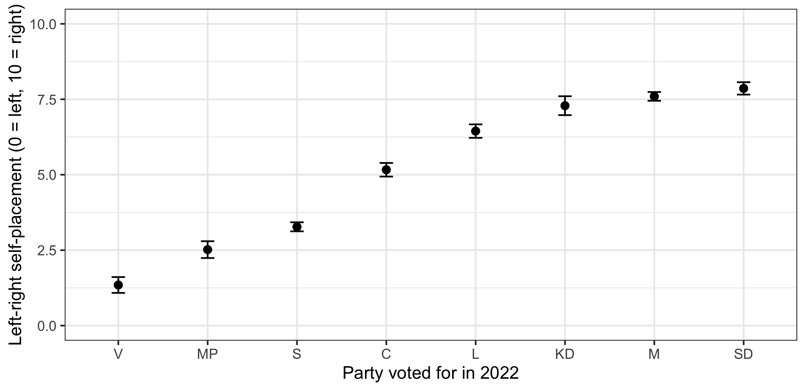

library(ggplot2)
library(dplyr)
swe <- readRDS("data/swe.rds")
swe$sex <- factor(
swe$female,
levels = c(0, 1),
labels = c("Men", "Women")
)13 Regression: dummy variables
Regression needs numbers. Party choice is not a number, and neither is sex, education group, or which of the three historical lands somebody lives in.
This session is about how categorical predictors get into a model, and — more importantly — how to read what comes out.
13.1 Two categories
Start with the simplest case. Do men and women place themselves differently on the left-right scale?
We answered this in session 8 with a t-test. Here it is as a regression.
model_sex <- lm(lr_self ~ sex, data = swe)
round(coef(summary(model_sex)), 3)## Estimate Std. Error t value Pr(>|t|)
## (Intercept) 5.638 0.080 70.600 0
## sexWomen -0.787 0.112 -7.039 0Two coefficients from a two-category variable. R has created a variable called sexWomen which is 1 for women and 0 for men, and put that in the model. A 0/1 variable like this is a dummy variable.
That makes the two numbers easy to read.
(Intercept)= 5.64 is the predicted value whensexWomenis 0 — that is, the mean for men.sexWomen= -0.79 is what to add whensexWomenis 1 — the difference between women and men.
So the predicted value for women is 5.64 + (-0.79) = 4.85.
Check that against the group means:
swe |>
filter(!is.na(sex)) |>
group_by(sex) |>
summarise(mean = round(mean(lr_self, na.rm = TRUE), 3))## # A tibble: 2 × 2
## sex mean
## <fct> <dbl>
## 1 Men 5.64
## 2 Women 4.85Exactly. With a single categorical predictor, regression is doing nothing more than comparing group means — and the coefficient is the difference between them. Compare the t-test from session 8 and you will find the same difference and the same p-value.
The category that does not get a coefficient — men, here — is the reference category. Everything is expressed relative to it.
R picks the reference category by taking the first level of the factor, which for text is alphabetical order unless you said otherwise. This is why session 2 spent time on setting factor levels deliberately: the choice made there decides what your regression output compares things to.
13.2 More than two categories
Now the interesting case. Where do the voters of each of the eight parties place themselves?
model_vote <- lm(lr_self ~ vote, data = swe)
round(coef(summary(model_vote)), 3)## Estimate Std. Error t value Pr(>|t|)
## (Intercept) 1.346 0.155 8.680 0
## voteMP 1.172 0.215 5.460 0
## voteS 1.928 0.168 11.448 0
## voteC 3.818 0.208 18.327 0
## voteL 5.099 0.215 23.679 0
## voteKD 5.942 0.224 26.583 0
## voteM 6.249 0.178 35.129 0
## voteSD 6.514 0.186 35.093 0Eight parties, seven coefficients, one intercept. R has made seven dummy variables — one fewer than the number of categories.
That is not an oversight. With eight categories you only need seven yes/no questions to identify which one someone is in: if all seven answers are no, they must be in the eighth. Adding an eighth dummy would tell the model nothing it did not already know, and it would refuse to fit.
The Left Party (V) is the reference, because it is the first level of the factor — we set the levels in left-to-right order when the data was built.
So:
(Intercept)= 1.35 is the predicted left-right placement of a Left Party voter.voteS= 1.93 means Social Democrat voters place themselves 1.93 points further right than Left Party voters.voteSD= 6.51 means Sweden Democrat voters are 6.51 points further right than Left Party voters.
Every coefficient is a comparison with the reference category, and with nothing else. voteM and voteSD are each compared to V; the table does not directly tell you whether M and SD differ from each other.
Add the intercept to each coefficient and you recover the group means:
swe |>
filter(!is.na(vote)) |>
group_by(vote) |>
summarise(
n = n(),
mean = round(mean(lr_self, na.rm = TRUE), 2)
)## # A tibble: 8 × 3
## vote n mean
## <fct> <int> <dbl>
## 1 V 138 1.35
## 2 MP 150 2.52
## 3 S 820 3.27
## 4 C 172 5.16
## 5 L 145 6.45
## 6 KD 133 7.29
## 7 M 440 7.6
## 8 SD 336 7.861.35 for V, and 1.35 + 6.51 = 7.86 for SD. The model is a compact way of writing down eight group means.
A question. This model has an R-squared of 0.626 — vote choice accounts for about 63% of the variance in where people place themselves on the left-right scale.
That is enormous by the standards of survey research. Does it mean party choice explains ideology? What else could produce a number like that?
13.3 Changing the reference
The reference category is a presentational choice, not a statistical one. The model is identical whichever you pick — the predicted values, the residuals, the R-squared and the F-test are all unchanged. Only the comparisons on display change.
Comparing everything to the Left Party, the smallest party in the data, is rarely what you want. The Social Democrats are the obvious benchmark.
swe$vote_s <- relevel(swe$vote, ref = "S")
model_vote_s <- lm(lr_self ~ vote_s, data = swe)
round(coef(summary(model_vote_s)), 3)## Estimate Std. Error t value Pr(>|t|)
## (Intercept) 3.274 0.066 49.944 0
## vote_sV -1.928 0.168 -11.448 0
## vote_sMP -0.756 0.162 -4.665 0
## vote_sC 1.890 0.154 12.295 0
## vote_sL 3.171 0.163 19.441 0
## vote_sKD 4.014 0.174 23.099 0
## vote_sM 4.321 0.109 39.645 0
## vote_sSD 4.586 0.121 37.837 0relevel() moves one level to the front, with ref naming which. Now:
(Intercept)= 3.27 is the Social Democrat voter.- Coefficients are negative for parties to their left and positive for parties to their right — which is a table you can hand to a reader without explanation.
Confirm nothing else moved:
c(
original = summary(model_vote)$r.squared,
relevelled = summary(model_vote_s)$r.squared
)## original relevelled
## 0.6261557 0.6261557Pick the reference deliberately. Good choices are the largest category, a natural baseline, or the group your argument is about. A bad choice is whichever one happened to come first alphabetically — which is what you get if you do not choose.
13.4 Does the variable matter as a whole?
Seven coefficients raise a question the table cannot answer: is party related to left-right placement, taken as one thing?
You cannot answer that by scanning seven p-values. The test for a categorical variable as a whole is an F-test, comparing the model with the variable against the model without it.
anova(model_vote)## Analysis of Variance Table
##
## Response: lr_self
## Df Sum Sq Mean Sq F value Pr(>F)
## vote 7 10640.9 1520.12 497.45 < 2.2e-16 ***
## Residuals 2079 6353.1 3.06
## ---
## Signif. codes: 0 '***' 0.001 '**' 0.01 '*' 0.05 '.' 0.1 ' ' 1One row for vote, with 7 degrees of freedom — the seven dummies — and a single p-value for the lot.
This matters more when the individual coefficients are marginal. A variable can have no single significant category and still improve the model.
The same test works for comparing any two nested models — but there is a trap in it, so let us walk into it.
model_small <- lm(lr_self ~ sex, data = swe)
model_big <- lm(lr_self ~ sex + educ3, data = swe)
anova(model_small, model_big)## Error in `anova.lmlist()`:
## ! models were not all fitted to the same size of datasetanova() with two models asks whether the larger one fits significantly better. It refuses here, and the message says why: the two models were not fitted to the same number of cases.
c(small = nobs(model_small), big = nobs(model_big))## small big
## 2448 2394Adding educ3 dropped everyone missing on education, so the larger model has 54 fewer respondents than the smaller one. Comparing them would confound “does education help?” with “are those 54 people different?”.
The fix is to fit both on the same cases.
complete <- swe |>
filter(!is.na(lr_self), !is.na(sex), !is.na(educ3))
model_small <- lm(lr_self ~ sex, data = complete)
model_big <- lm(lr_self ~ sex + educ3, data = complete)
anova(model_small, model_big)## Analysis of Variance Table
##
## Model 1: lr_self ~ sex
## Model 2: lr_self ~ sex + educ3
## Res.Df RSS Df Sum of Sq F Pr(>F)
## 1 2392 18205
## 2 2390 18060 2 145.47 9.6256 6.861e-05 ***
## ---
## Signif. codes: 0 '***' 0.001 '**' 0.01 '*' 0.05 '.' 0.1 ' ' 1Now the comparison is honest, and education does improve the model.
Two conditions, then. The models must be nested — every predictor in the smaller one present in the larger — and they must be fitted on the same rows. R checks the second and will tell you; it does not check the first.
13.5 A mistake worth avoiding
Suppose you forget to make the variable a factor and R sees it as a number.
swe$vote_number <- as.numeric(swe$vote)
round(coef(summary(lm(lr_self ~ vote_number, data = swe))), 3)## Estimate Std. Error t value Pr(>|t|)
## (Intercept) 0.548 0.091 6.001 0
## vote_number 0.990 0.018 56.040 0One coefficient instead of seven, and it looks like a clean result: each step up the party numbering is worth 0.99 points of left-right placement.
It is nonsense. The model has assumed the eight parties are equally spaced, in the order the levels happen to be in, and that the gap between V and MP is the same as the gap between M and SD. Look at the group means and you can see they are not.
Here the levels are at least in left-right order, so the nonsense is mild and the R-squared only drops from 0.626 to 0.601. Had the levels been alphabetical — C, KD, L, M, MP, S, SD, V — the model would have been fitting a straight line through an arbitrary ordering, and it would still have produced a coefficient, a standard error and a p-value.
Check the class of every categorical predictor before fitting.
class(swe$vote)should sayfactor. R will happily run a model on a nominal variable stored as numbers, and nothing in the output will look wrong.
13.6 Showing it
A table of seven coefficients against a reference is hard to read. Group means with intervals are easier.
party_means <- swe |>
filter(!is.na(vote), !is.na(lr_self)) |>
group_by(vote) |>
summarise(
n = n(),
mean = mean(lr_self),
se = sd(lr_self) / sqrt(n())
)
ggplot(party_means, aes(x = vote, y = mean)) +
geom_point(size = 2) +
geom_errorbar(
aes(ymin = mean - 1.96 * se, ymax = mean + 1.96 * se),
width = 0.15
) +
coord_cartesian(ylim = c(0, 10)) +
labs(
x = "Party voted for in 2022",
y = "Left-right self-placement (0 = left, 10 = right)"
) +
theme_bw()
geom_errorbar() draws the intervals: ymin and ymax give the bottom and top of each bar, and width is the size of the caps. The vertical axis runs the full 0 to 10 because the scale is bounded and session 4 said to show all of it.
Now the comparison the coefficient table could not make is easy: the Moderates and the Sweden Democrats have overlapping intervals, so their voters are not distinguishable on this scale, while the Christian Democrats sit slightly below both.
Note how few cases some parties have — 118 for the smallest. That is why its interval is wide, and it is a good reason to be careful about conclusions involving small parties.
How to write it up.
Left-right self-placement differed sharply by party (F(7, 2079) = 497.4, p < .001, R² = 0.63). Taking Social Democrat voters as the reference (M = 3.27), Left Party voters placed themselves 1.93 points further left, while Sweden Democrat voters placed themselves 4.59 points further right (n = 2087).
Say which category is the reference — without it the table cannot be read. Mistakes to avoid:
- Not naming the reference category. The single most common failure with dummy variables.
- Reading a coefficient as a comparison with the average. It is a comparison with the reference, and nothing else.
- Comparing two non-reference coefficients directly from the table. To test M against SD, relevel and refit, or use a proper contrast.
- Reporting seven p-values instead of one F-test when the question is whether the variable matters at all.
- Leaving the reference as whatever came first alphabetically.
- Putting a nominal variable in as a number. Check
class(). - Ignoring small categories. A category with a handful of cases produces a coefficient with an interval wide enough to contain almost anything.
In the seminar. swirl lesson 13 Regression Dummies. Binary and multi-category predictors, reference categories, relevel(), testing a factor as a whole, and what happens when a factor is treated as a number. Around 30 minutes.